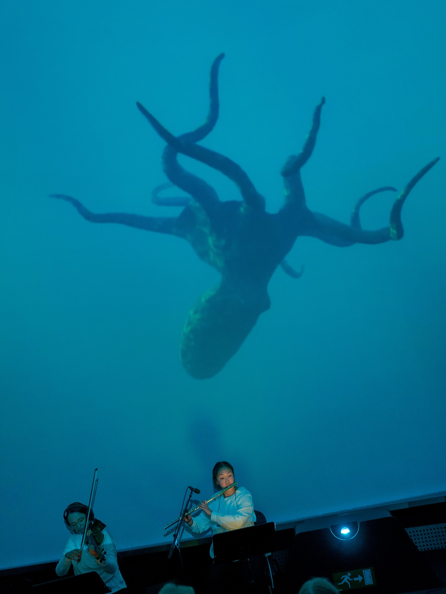
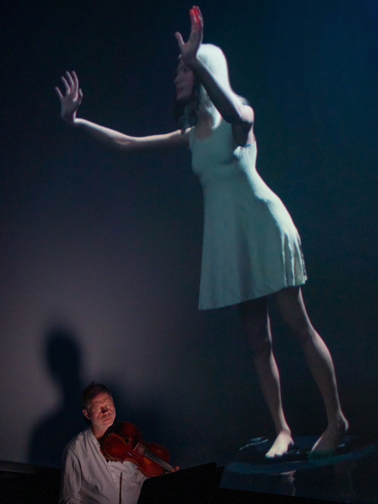
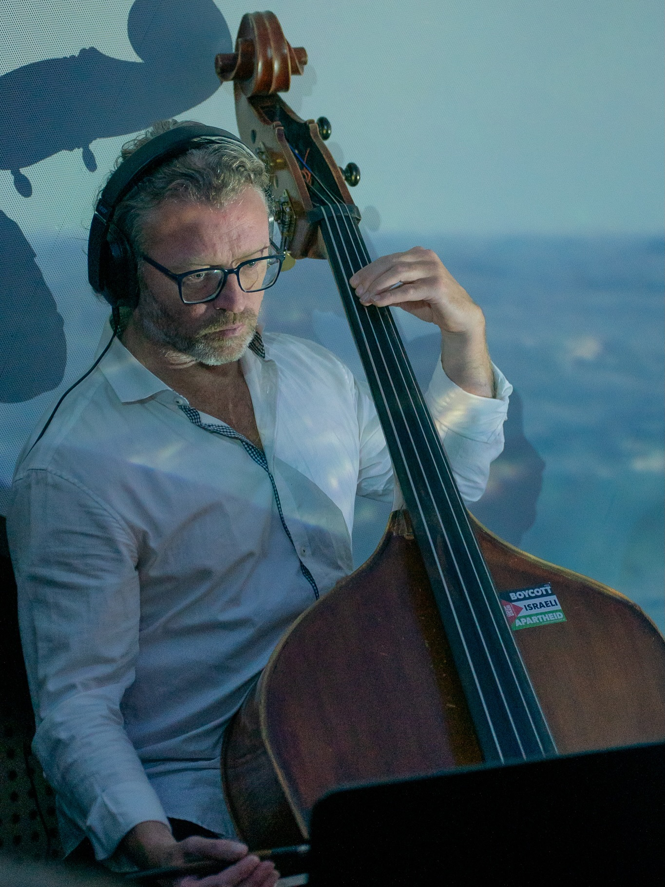

This semester, I worked on three very different animation projects.
Face It
Our own animated short film about Pau, who faces his biggest fear: going down an escalator. It was our first festival submission and was selected for Minimalen 2026.
The Land in the Middle
An animation created as part of DACCHE (Digital Action on Climate Change with Heritage Environments), an international project exploring how digital storytelling can raise awareness of climate change and its impact on cultural landscapes and heritage;
Watch the video about the project here.HAVET
A 20-minute fulldome animation accompanying composer Hilmar Thórdarson's live concert at the Trondheim Planetarium during Kamfest 2025 (Trondheim Kammermusikkfestival).



Motion Capture
I was trusted with handling the motion capture recordings for both The Land in the Middle and HAVET. The DACCHE project served as my introduction to the process. I was tasked with recording short animation clips that the director couldn't find on Mixamo.
Using the university's Xsens motion capture suit and MANUS gloves, I familiarised myself with the equipment through independent research and guidance from a Games student with previous experience. I learned about sensor placement, potential signal interference, accurately measuring the actor and setting up the corresponding digital skeleton. After directing the recording sessions, I experimented with different export settings to find the most suitable way to deliver the animations.
For HAVET, we took on a much larger challenge, recording three sequences ranging from three to seven minutes. These involved extended walks, pushing, pulling, struggling and even simulating floating.
The longer sequences required multiple takes and extensive cleanup. I helped prepare the recordings for this process by figuring out the Xsens-to-MotionBuilder workflow, testing suitable settings and researching solutions whenever the cleanup artist encountered difficulties. I also handled the final retargeting of the cleaned animations in Unreal Engine.
Cloth Simulation
I worked on the cloth simulation for HAVET alongside another team member, taking responsibility for most of the implementation. Since neither of us had extensive experience with cloth simulation, it involved quite a bit of experimentation.
We initially attempted to set up the simulation in Unreal Engine, but the results didn't meet the director's expectations. My teammate suggested switching to Marvelous Designer, where I continued developing the simulation.
This brought its own challenges. The director wanted a flowy dress, but its relatively short design meant that unwanted parts of the character were frequently exposed during movement. The character also moved through a zero-gravity environment, alternating between floating and normal gravity. This made it particularly difficult to achieve natural-looking cloth movement while keeping the dress in place.
Through experimentation and adjustments to the simulation, I eventually achieved a result that satisfied the director.
Octopus Rig
For HAVET, I was also tasked with creating an octopus rig, which was my first experience with animal rigging. The highly organic nature of the character presented some unique challenges. I drew inspiration from a stretchy cable technique I had learned previously, adapting it to work for both the tentacles and the head. This was also my first time scripting small helper tools to speed up my workflow. Rather than repeating the same setup steps for each tentacle, I wrote a simple script to automate parts of the process. Once I had established a working method, I could apply it to the remaining tentacles much more efficiently.
I'm currently working on this page, but until I'm done, here is some of what I worked on in video form: